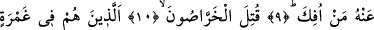
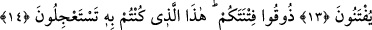

KAHROLSUN O KOYU YALANCILAR!
7. İçinde yörüngeleri olan göğe andolsun ki
8. Siz çelişkili sözler söylüyorsunuz.
9. Ondan (Kur’an’dan veya îmandan) dönen, döndürülür (engellenmez).
10. Kahrolsun o koyu yalancılar!
11. Onlar koyu bir cehalet içerisinde kalmış gafillerdir.
12. Cezâ gününün ne zaman olduğunu sorarlar.
13. O gün onlar ateşe sokulacaklardır.
14. Azabınızı tadın! Acele gelmesini beklediğiniz şey budur işte! (denir.)
“Hubük” kelimesi, “hibâk” veya “habîke”nin cem’idir. Aynı “misâl” ve “müsül”;
“tarîka” ve “turuk” kelimeleri gibidir. “Hubük”den murad, yollar yâni yıldızların
üzerinde dönüp dolaştıkları, duyularla algılanılabilen yörüngelerdir. Veya hubük’ten
maksad, izleyenlerini ulûm ve meârife götüren, Allah’ın ilm ve hikmetine ulaştıran
tarâik-ı ma’kule yâni ancak akılla takip edilip yürünebilecek yollardır.
Râğıb İsfahânî hubük’e yollar, yörüngeler anlamını vermiştir. Bazıları da hubük’ten
muradın; farsçada “kehkeşan”/samanyolu diye ta’bir olunan yıldız galaksilerine mahsus
yörünge ve çekim alanları olduğunu söylemişlerdir.
Hz. Ali (r.a.), semânın kıyâmet gününde hâreli bir mâhiyete bürüneceğini söylemiştir.
Bâzı âlimler bu sözden, semânın gözle idrak edilebilecek yollara ayrılacağının
kasdedilmiş olduğunu belirtmişlerdir. “Göklerin ve yerin yaratılışında, gecenin ve
gündüzün peşpeşe gidip gelişinde elbette temiz akıl sâhipleri için ibretler vardır”
(Âl-i İmrân 3/190) âyetinden “....Rabbimiz (derler), bunları boş yere yaratmadın...”
(Âl-i İmran 3/191) kısma kadar olan âyetler buna işâret etmektedir.
İbn Abbas (r.anhuma), semâ hakkındaki bu ifâdeyle ilgili olarak, “yaradılışı güzel ve
düzgün” açıklamasını yapmıştır..
Tibyân’da İbn Ömer (r.a.)’dan nakledildiğine göre âyette geçen “semâ”dan maksad,
yedinci âsumândır ve Hak Teâlâ ona yemin etmiştir.